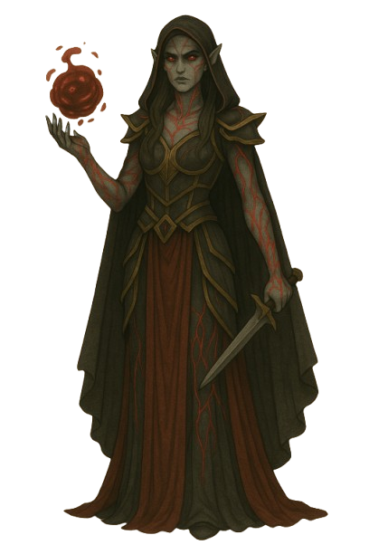
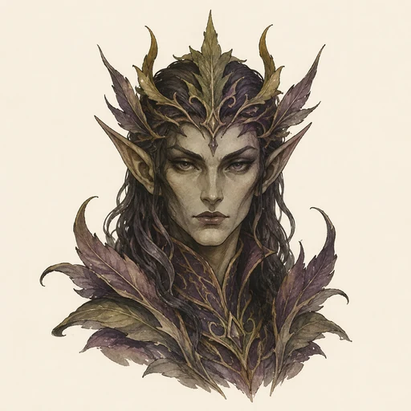
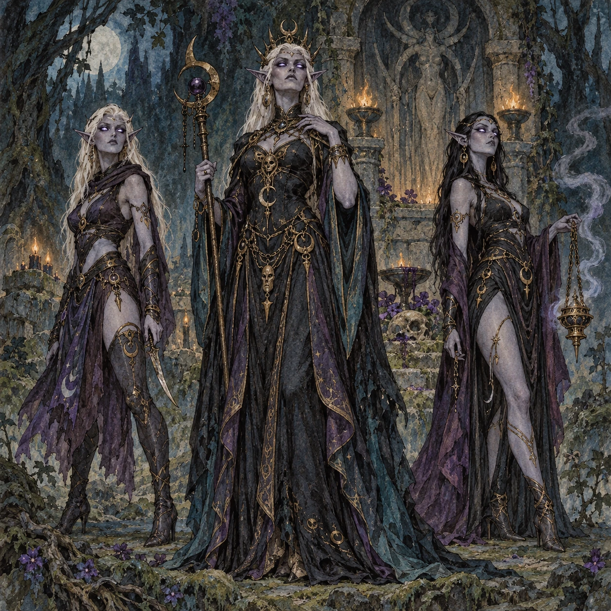

Finsteralben
Lunen (Lunara)
Eine an Lunara gebundene Aelvar-Linie, deren dunkle Eleganz und beherrschte Magie ihre matriarchale Stellung unterstreichen.

KreaturenarchivAleria und infernale Sphären · Im Dienst Lunaras, Helas, Nyxaras und Nemsaras · Archivblatt IV / 05
Matriarchale Finsteralben im Dienst infernaler Göttinnen
Die Aelvar sind finstere, mystische Finsteralben mit der Anmut von Nymphen und Elfen. Ihre streng matriarchale Ordnung, die Macht ihrer Matronen und ihre Bindung an Lunara, Hela, Nyxara oder Nemsara machen sie zu geduldigen Täuscherinnen, Zauberinnen und Mittlerinnen innerhalb der infernalen Welt.

„Wer nur auf ihre Klinge achtet, hat die Entscheidung längst verpasst; eine Aelvar gewinnt zuerst über Blick, Wort und Zweifel.“Randvermerk eines alerischen Hofkundigen
Sechs Merkmale · Skala 1–10
Die Aelvar-Tafel bewertet jene Mittel, mit denen die Finsteralben ihre Umgebung beherrschen: verborgene Einflussnahme, magische Führung und die Bindung an ihre jeweilige Göttin.
Quelle der Einordnung: Aus Gesellschaftsordnung, Erscheinung, Vorgehensweise, Zauberwirken und den überlieferten Gegenmitteln der Aelvar abgeleitet
Die Aelvar sind eine finstere, mystische Gattung von Finsteralben im Dienst der infernalen Göttinnen Lunara, Hela, Nyxara und Nemsara. In ihnen verbinden sich die Anmut von Nymphen und Elfen mit einer dunklen, beinahe überirdischen Grazie.
Dadurch unterscheiden sie sich deutlich von den gröber auftretenden Ogroiden oder Inferniiden. Ihre Gefahr liegt selten in lärmender Gewalt, sondern in Beherrschung, Magie und dem sorgfältig gewählten Augenblick.
Die Gesellschaft der Aelvar ist matriarchal. Weibliche Exemplare dominieren, während männliche Aelvar in untergeordnete und häufig dienende Rollen gezwungen werden.
Macht und Weisheit liegen in den Händen der Matronen. Sie führen ihre Linien, bewahren deren Wissen und gelten zugleich als besonders starke Magierinnen.
Aelvar besitzen schmale, anmutige Körper und feine Gesichtszüge. Ihre Haut wirkt meist blass oder schimmernd; die Augen können je nach Linie in mystischen Farben leuchten.
Prächtige dunkle Gewänder, Schmuck und Zeichen ihrer Göttin machen Zugehörigkeit und Rang sichtbar. Selbst in Ruhe wirken ihre Bewegungen bewusst gesetzt und beinahe hypnotisch.
Lunen folgen Lunara, Lamenta Hela, Nyxaren und Umbren Nyxara, Erinyen Nemsara. Die Bindung prägt Symbolik, Magie und Auftrag, ohne die gemeinsame Ordnung der Aelvar aufzulösen.
Aelvar greifen nur selten offen in Konflikte ein. Häufig wirken sie im Hintergrund, vermitteln den Willen ihrer Göttinnen, lenken Diener oder verändern Entscheidungen durch Täuschung und wohlgesetzte Worte.
Ihre Zurückhaltung ist kein Zeichen geringer Macht. Sie erlaubt ihnen, unerkannt zu bleiben, bis ein Bündnis, ein Hof oder eine Gemeinschaft bereits nach ihrem Plan handelt.
Rohe Gewalt genügt selten, weil Aelvar Abstand, Illusion und Manipulation nutzen. Wer ihnen begegnet, muss Wahrnehmung und Urteilsvermögen schützen und zuerst erkennen, welche Bilder oder Aussagen nicht der Wirklichkeit entsprechen.
Ihre Verbindung zu den Göttinnen kann sie besonders gegen sakrale Angriffe abschirmen. Sobald Täuschungen gebrochen und Zauberbindungen erkannt sind, können gezielte magische Gegenmaßnahmen ihre Kontrolle schwächen.